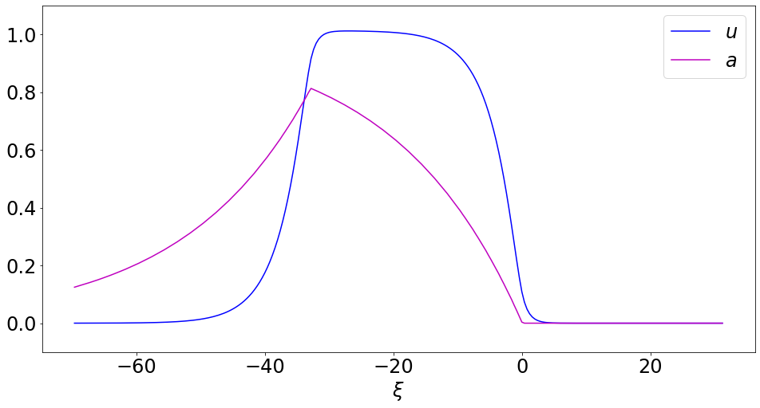
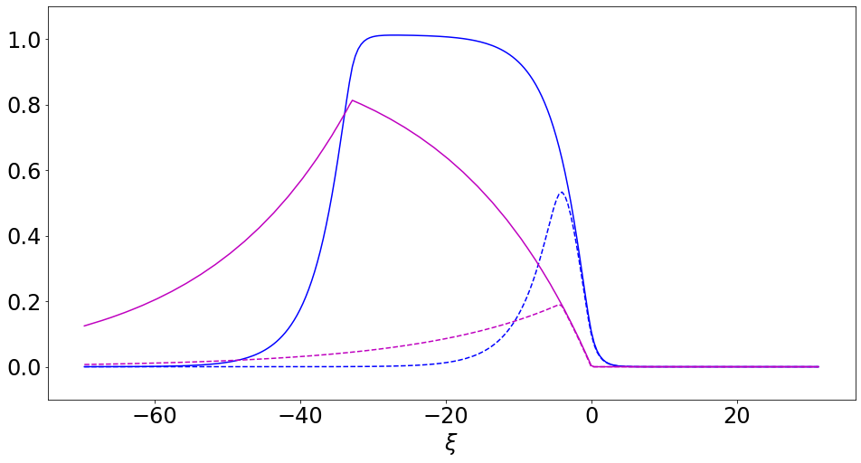
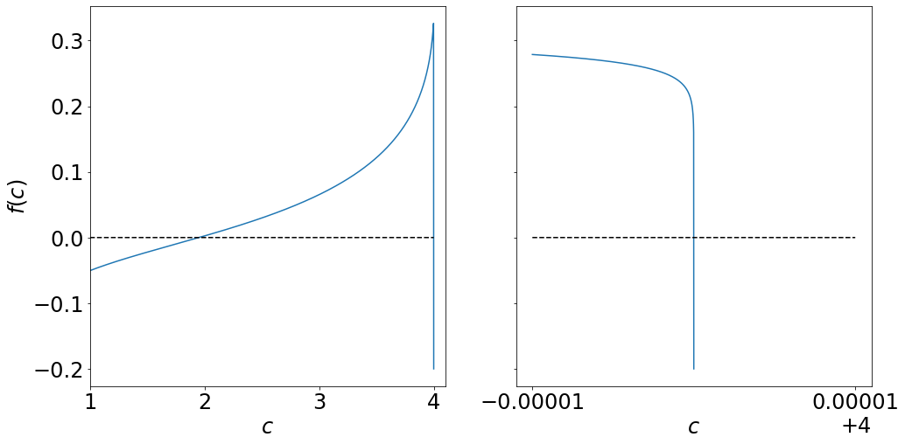
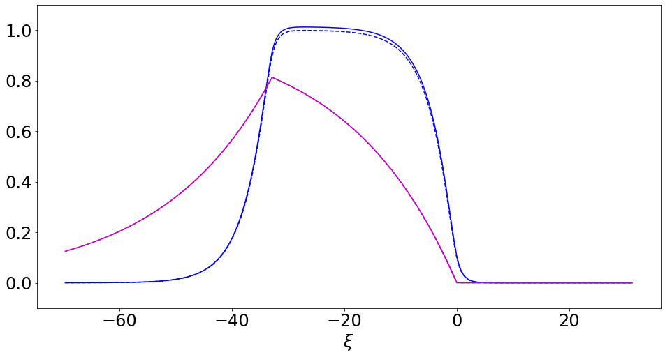
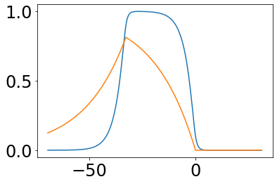

%matplotlib inline
import matplotlib.pyplot as plt
import matplotlib.animation as animation
from IPython.display import HTML
import numpy as np
import numpy.linalg as la
from scipy.integrate import RK45
import sympy as sym
# Heaviside numerics workaround
sympy_modules = [{'Heaviside': lambda x: np.heaviside(x,0.5)}, 'numpy']
from table_maker import *
from functools import partial, reduce
from itertools import *
from math import ceil
import pickle
def cos_bell(x, center=0, width=2*np.pi, height=1):
return (np.cos((x-center)/width*2*np.pi)+1)/2*height * np.heaviside(x-center+width/2,0) * np.heaviside(-x+center+width/2,0)
import collections.abc
def collect_eqn(expr, terms):
if not isinstance(terms, collections.abc.Container):
term = terms # isn't a list or tuple
left, right = 0,0
for my_expr in expr.args:
has_term = False
for my_term in sym.postorder_traversal(my_expr):
if term == my_term:
has_term = True
break
if has_term:
left += my_expr
else:
right -= my_expr
return sym.Eq(left, right, evaluate=False)
else: # isn't a list or tuple
left_total, right_total = 0, expr
for term in terms:
left, right = collect_eqn(right_total, term).args
left_total += left
right_total = -right
return sym.Eq(left_total, right_total, evaluate=False)
def my_print(expr):
global eviron_print_tex
if eviron_print_tex:
print('$$' + sym.latex(expr) + '$$')
else:
display(expr)
def batch_print(expr_list, punctuation='.', return_string=False):
global eviron_print_tex
if eviron_print_tex:
print_str = '$$\\begin{align*}\n'
for expr in expr_list:
print_str += '\t' + sym.latex(expr).replace('=','&=') + '\\\\\n'
# remove last new-line and add ending puncuation
print_str = print_str[:-3] + punctuation + '\n'
print_str += '\\end{align*}$$'
if return_string:
return print_str
else:
print(print_str)
else:
for expr in expr_list:
display(expr)
def py_code(expr, replace_numpy=True, replace_unicode=True, numpy_package='np.'):
code = sym.ccode(expr)
if replace_unicode:
unicode_replacements = [
('\\alpha', 'α'),
('\\beta', 'β'),
('\\gamma', 'γ'),
('\\Gamma', 'Γ'),
('\\delta', 'δ'),
('\\Delta', 'Δ'),
('\\epsilon', 'ϵ'),
('\\zeta', 'ζ'),
('\\eta', 'η'),
('\\theta', 'θ'),
('\\xi', 'ξ'),
('\\mu', 'μ')
]
for unicode, symbol in unicode_replacements:
code = code.replace(unicode, symbol)
if replace_numpy:
numpy_replacements = [
('exp', numpy_package + 'exp'),
('log', numpy_package + 'log'),
('pow', '( lambda base, exponent: base**exponent )'),
('Heaviside', '(lambda input: np.heaviside(input,0.5))')
]
for c_func, np_func in numpy_replacements:
code = code.replace(c_func, np_func)
return codeimport matplotlib
matplotlib.rcParams.update({'font.size': 24})From Kilpatrick and Bressloff 2010 \[\begin{align*} \mu u_t &= -u + \int_{-\infty}^\infty w(x,x^\prime) q(x^\prime,t) f( u(x^\prime,t) - a(x^\prime,t)) \ dx^\prime \\ q_t &= \frac{1 - q}{\alpha} - \beta q f(u - a) \\ \epsilon a_t &= -a + \gamma f(u - a) \end{align*}\]
Modified version - remove synaptic depression \(q\) \[\begin{align*} \mu u_t &= -u + \int_{-\infty}^\infty w(x,x^\prime) f( u(x^\prime,t) - a(x^\prime,t)) \ dx^\prime \\ \alpha a_t &= -a + \gamma f(u - a) \end{align*}\] (note that parameters have been relabeled)
eviron_print_tex = False
μ, α, γ, τ, c, Δ = sym.symbols('\\mu \\alpha \\gamma, \\theta, c \\Delta', real=True, positive = True)
with open('profile.pickle', 'rb') as f:
xs, Us, As, param_list = pickle.load(f)
params = [μ, α, γ, τ, Δ, c]
param_dict = {key:val for key,val in zip(params, param_list)}
x, xp, t, ξ, ξp = sym.symbols('x x^\\prime t \\xi \\xi^\\prime', real=True)
u = sym.Function('u', real=True)(x,t)
a = sym.Function('a', real=True)(x,t)
U = sym.Function('U', real=True)(ξ)
A = sym.Function('A', real=True)(ξ)
Fright = (1-sym.exp(-Δ))*sym.exp(-ξ)/2
Fmid = (2 - sym.exp(ξ) - sym.exp(-ξ-Δ)).collect(sym.exp(ξ))/2
Fleft = (sym.exp(ξ+Δ) - sym.exp(ξ)).collect(sym.exp(ξ))/2
F = (Fright*sym.Heaviside(ξ) + Fmid*sym.Heaviside(ξ+Δ)*sym.Heaviside(-ξ) + Fleft*sym.Heaviside(-ξ-Δ))/2
G = γ*( sym.Heaviside(ξ+Δ) - sym.Heaviside(ξ) )
LU = lambda f: μ*c*f.diff(ξ) - f
LA = lambda f: α*c*f.diff(ξ) - f
print('Our problem reduces to solving')
H = sym.symbols('H')
batch_print([sym.Eq(0,LU(U)+F).subs(sym.Heaviside, H), sym.Eq(0, LA(A) + G).subs(sym.Heaviside, H)])
##########################################################
#
# A homogeneous
#
##########################################################
print('We will first find $A$. The homogeneous solution is given by')
Ahom = sym.dsolve(LA(A), A).args[1].expand()
C1 = sym.symbols('C1')
batch_print([sym.Eq(A, Ahom)])
##########################################################
#
# A right = 0
#
##########################################################
print('From this, and our right-boundary condition, we see that $A(\\xi) = 0$ for $\\xi > 0$.')
Aright = 0
##########################################################
#
# A middle
#
##########################################################
Gmid = γ
Amid = sym.dsolve(LA(A) + Gmid, ics={A.subs(ξ,0):0}).args[1].expand().collect(γ)
print('Solving for $A$ in $-\\Delta < \\xi < 0$ with this boundary condition $A(0)=0$ we have')
batch_print([ sym.Eq(A, Amid) ])
##########################################################
#
# A left
#
##########################################################
C1exp = sym.solve(Ahom.subs(ξ, -Δ) - Amid.subs(ξ,-Δ), sym.exp(C1/α/c))[0]
Aleft = Ahom.subs(sym.exp(C1/α/c), C1exp)
print('Then we use this new boundary condition for $A(-\\Delta)$ and the homogeneous solution to find $A(\\xi)$ for $\\xi < -\\Delta$')
batch_print([sym.Eq(A, Aleft)])
##########################################################
#
# Combine to get A
#
##########################################################
Asub = sym.Piecewise( (Aleft, ξ<-Δ), (Amid, ξ<0), (Aright, True))
print('Thus')
batch_print([sym.Eq(A, Asub)])
##########################################################
#
# Find Uright
#
##########################################################
print('We next solve for $U$ on the right domain.')
print('We seek a solution to')
batch_print([sym.Eq(0, LU(U)+Fright), sym.Eq(U.subs(ξ,0), τ)])
Uhom = sym.dsolve(LU(U), U).args[1]
assert LU(Uhom).simplify() == 0
temp = sym.symbols('T_{emp}')
form = sym.exp(-ξ)
temp_sub = sym.solve( LU(temp*form)+Fright, temp )[0]
Upar = temp_sub*form
assert (LU(Upar)+Fright).simplify() == 0
Uright = Uhom + Upar
assert (LU(Uright)+Fright).simplify() == 0
C1 = sym.symbols('C1')
C1exp_sub = sym.solve(Uright.subs(ξ, 0).expand()-τ, sym.exp(C1/μ/c))[0]
Uright = Uright.expand().subs(sym.exp(C1/μ/c), C1exp_sub)
assert (LU(Uright)+Fright).simplify() == 0
assert (Uright.subs(ξ,0) - τ).simplify() == 0
print('Solving, we find')
batch_print([sym.Eq(U, Uright)])
##########################################################
#
# Find Umid
#
##########################################################
print('On the middle domain, we seek a solution to')
batch_print([sym.Eq(0, LU(U)+Fmid), sym.Eq(U.subs(ξ,0), τ)])
temp1, temp2, temp3 = sym.symbols('T1 T2 T3')
form1, form2, form3 = 1, sym.exp(-ξ), sym.exp(ξ)
ansatz = temp1*form1 + temp2*form2 + temp3*form3
Lansatz = LU(ansatz).expand().collect(sym.exp(ξ))
temp1_sub = sym.solve( Lansatz.subs(temp2, 0).subs(temp3, 0) - [term for term in Fmid.args if 'exp' not in str(term)][0], temp1 )[0]
temp2_sub = sym.solve( Lansatz.coeff(sym.exp(-ξ)) - Fmid.coeff(sym.exp(-ξ)), temp2)[0]
temp3_sub = sym.solve( Lansatz.coeff(sym.exp(ξ)) - Fmid.coeff(sym.exp(ξ)), temp3)[0]
Upar = -temp1_sub*form1 - temp2_sub*form2 - temp3_sub*form3
assert (LU(Upar) + Fmid).simplify() == 0
Umid = Uhom + Upar
C1exp_sub = sym.solve(Umid.subs(ξ, 0).expand()-τ, sym.exp(C1/μ/c))[0]
Umid = Umid.expand().subs(sym.exp(C1/μ/c), C1exp_sub)
assert (LU(Umid)+Fmid).simplify() == 0
assert (Umid.subs(ξ,0) - τ).simplify() == 0
print('Solving, we find')
batch_print([sym.Eq(U, Umid)])
##########################################################
#
# Find Uleft
#
##########################################################
print('On the left domain, we seek a solution to')
batch_print([sym.Eq(0, LU(U)+Fleft), sym.Eq(U.subs(ξ,-Δ), Umid.subs(ξ,-Δ))])
form = sym.exp(ξ)
ansatz = LU(temp*form).collect(form)
temp_sub = sym.solve( ansatz.coeff(form) - Fleft.coeff(form), temp )[0]
Upar = -temp_sub * form
assert ( LU(Upar) + Fleft ).simplify() == 0
Uleft = Uhom + Upar
C1exp_sub = sym.solve( Uleft.subs(ξ,-Δ).expand() - Umid.subs(ξ,-Δ).expand(), sym.exp(C1/μ/c))[0]
Uleft = Uleft.expand().subs(sym.exp(C1/μ/c), C1exp_sub)
assert ( LU(Uleft) + Fleft ).simplify() == 0
assert ( Uleft.subs(ξ,-Δ) - Umid.subs(ξ,-Δ) ).simplify() == 0
print('Solving, we find')
batch_print([sym.Eq(U, Uleft)])
##########################################################
#
# Simplify
#
##########################################################
Uleft = Uleft.expand().collect(sym.exp(ξ)).collect(sym.exp(ξ/μ/c)).collect(sym.exp(Δ)).collect(τ).collect(1/(μ*c-1)).collect(1/(μ**2*c**2-1))
Uleft = Uleft.collect(1/(2*μ**2*c**2-2)).collect(2).collect(1/(μ**2*c**2-1))
#Umid = Umid.expand().collect(sym.exp(ξ)).collect(sym.exp(ξ/μ/c)).collect(τ).collect(2).collect(sym.exp(Δ)).collect(1/(μ**2*c**2-1))
test = sum([arg.simplify() for arg in Umid.expand().collect(τ).args])
test = test.collect(sym.exp(ξ/μ/c)).collect(sym.exp(ξ)).collect(2).collect(μ**2*c**2 - 1).collect(sym.exp(Δ)).collect(sym.exp(ξ))
assert (Umid - test).simplify() == 0
Umid = test
Uright = Uright.collect(sym.exp(ξ)).collect(sym.exp(ξ/μ/c)).collect(sym.exp(Δ)).collect(τ).collect(2).collect(1/(μ*c+1))
# display(Uleft)
# display(Umid)
# display(Uright)
##########################################################
#
# get conditions
#
##########################################################
cond1 = sym.limit(Uright, ξ, sym.oo).args[1].args[0].collect(sym.exp(Δ)).collect(τ).collect(2)
cond2 = (Umid - Amid).subs(ξ, -Δ) - τ
#cond2 = cond2.expand().collect(γ).collect(τ).collect(sym.exp(Δ/μ/c)).collect(sym.exp(Δ)).collect(2).collect(μ**2 * c**2 - 1)
cond2 = cond2.simplify()
cond1_sub = (cond1/2).expand().collect(τ).collect(sym.exp(Δ))
Uright = Uright.subs( cond1_sub, 0 )
print('Imposing the conditions $\\lim\limits_{\\xi \\to \infty} (U-A)(\\xi) = 0$ and $(U-A)(-\\Delta)=\\tau$ we have')
batch_print([sym.Eq(0, cond1), sym.Eq(0, cond2)])
Usub = sym.Piecewise( (Uleft, ξ<-Δ), (Umid, ξ<0), (Uright, True))
print('All together this becomes')
batch_print([sym.Eq(U, Usub), sym.Eq(A, Asub)])
Δexp_sub = sym.solve(cond1, sym.exp(Δ))[0]
cond2_c = cond2.subs(sym.exp(Δ), Δexp_sub).subs(sym.exp(Δ/μ/c), Δexp_sub**(1/μ/c)).subs(sym.exp(Δ/α/c), Δexp_sub**(1/α/c)).collect(τ).collect(2)Our problem reduces to solving\(\displaystyle 0 = \mu c \frac{d}{d \xi} U{\left(\xi \right)} + \frac{\left(1 - e^{- \Delta}\right) e^{- \xi} \theta\left(\xi\right)}{4} + \frac{\left(e^{\Delta} - 1\right) e^{\xi} \theta\left(- \Delta - \xi\right)}{4} + \frac{\left(- \frac{e^{\xi}}{2} + 1 - \frac{e^{- \Delta} e^{- \xi}}{2}\right) \theta\left(- \xi\right) \theta\left(\Delta + \xi\right)}{2} - U{\left(\xi \right)}\)
\(\displaystyle 0 = \alpha c \frac{d}{d \xi} A{\left(\xi \right)} + \gamma \left(- \theta\left(\xi\right) + \theta\left(\Delta + \xi\right)\right) - A{\left(\xi \right)}\)
We will first find $A$. The homogeneous solution is given by\(\displaystyle A{\left(\xi \right)} = e^{\frac{C_{1}}{\alpha c}} e^{\frac{\xi}{\alpha c}}\)
From this, and our right-boundary condition, we see that $A(\xi) = 0$ for $\xi > 0$.
Solving for $A$ in $-\Delta < \xi < 0$ with this boundary condition $A(0)=0$ we have\(\displaystyle A{\left(\xi \right)} = \gamma \left(1 - e^{\frac{\xi}{\alpha c}}\right)\)
Then we use this new boundary condition for $A(-\Delta)$ and the homogeneous solution to find $A(\xi)$ for $\xi < -\Delta$\(\displaystyle A{\left(\xi \right)} = \gamma \left(e^{\frac{\Delta}{\alpha c}} - 1\right) e^{\frac{\xi}{\alpha c}}\)
Thus\(\displaystyle A{\left(\xi \right)} = \begin{cases} \gamma \left(e^{\frac{\Delta}{\alpha c}} - 1\right) e^{\frac{\xi}{\alpha c}} & \text{for}\: \Delta < - \xi \\\gamma \left(1 - e^{\frac{\xi}{\alpha c}}\right) & \text{for}\: \xi < 0 \\0 & \text{otherwise} \end{cases}\)
We next solve for $U$ on the right domain.
We seek a solution to\(\displaystyle 0 = \mu c \frac{d}{d \xi} U{\left(\xi \right)} + \frac{\left(1 - e^{- \Delta}\right) e^{- \xi}}{2} - U{\left(\xi \right)}\)
\(\displaystyle U{\left(0 \right)} = \theta\)
Solving, we find\(\displaystyle U{\left(\xi \right)} = \frac{e^{\Delta}}{2 \mu c e^{\Delta} e^{\xi} + 2 e^{\Delta} e^{\xi}} - \frac{1}{2 \mu c e^{\Delta} e^{\xi} + 2 e^{\Delta} e^{\xi}} + \frac{\left(\mu \theta c e^{\Delta} + \theta e^{\Delta} - \frac{e^{\Delta}}{2} + \frac{1}{2}\right) e^{- \Delta} e^{\frac{\xi}{\mu c}}}{\mu c + 1}\)
On the middle domain, we seek a solution to\(\displaystyle 0 = \mu c \frac{d}{d \xi} U{\left(\xi \right)} - U{\left(\xi \right)} - \frac{e^{\xi}}{2} + 1 - \frac{e^{- \Delta} e^{- \xi}}{2}\)
\(\displaystyle U{\left(0 \right)} = \theta\)
Solving, we find\(\displaystyle U{\left(\xi \right)} = 1 - \frac{1}{2 \mu c e^{\Delta} e^{\xi} + 2 e^{\Delta} e^{\xi}} + \frac{\left(2 \mu^{2} \theta c^{2} e^{\Delta} - 2 \mu^{2} c^{2} e^{\Delta} - \mu c e^{\Delta} + \mu c - 2 \theta e^{\Delta} + e^{\Delta} - 1\right) e^{- \Delta} e^{\frac{\xi}{\mu c}}}{2 \left(\mu^{2} c^{2} - 1\right)} + \frac{e^{\xi}}{2 \mu c - 2}\)
On the left domain, we seek a solution to\(\displaystyle 0 = \mu c \frac{d}{d \xi} U{\left(\xi \right)} + \frac{\left(e^{\Delta} - 1\right) e^{\xi}}{2} - U{\left(\xi \right)}\)
\(\displaystyle U{\left(- \Delta \right)} = 1 + \frac{\left(2 \mu^{2} \theta c^{2} e^{\Delta} - 2 \mu^{2} c^{2} e^{\Delta} - \mu c e^{\Delta} + \mu c - 2 \theta e^{\Delta} + e^{\Delta} - 1\right) e^{- \Delta} e^{- \frac{\Delta}{\mu c}}}{2 \left(\mu^{2} c^{2} - 1\right)} - \frac{1}{2 \mu c + 2} + \frac{e^{- \Delta}}{2 \mu c - 2}\)
Solving, we find\(\displaystyle U{\left(\xi \right)} = \frac{\left(\mu^{2} \theta c^{2} e^{\Delta} - \mu^{2} c^{2} e^{\Delta} + \mu^{2} c^{2} e^{\Delta + \frac{\Delta}{\mu c}} - \frac{\mu c e^{\Delta}}{2} + \frac{\mu c}{2} - \theta e^{\Delta} + \frac{e^{\Delta}}{2} - \frac{1}{2}\right) e^{- \Delta} e^{\frac{\xi}{\mu c}}}{\mu^{2} c^{2} - 1} - \frac{e^{\Delta} e^{\xi}}{2 \mu c - 2} + \frac{e^{\xi}}{2 \mu c - 2}\)
Imposing the conditions $\lim\limits_{\xi \to \infty} (U-A)(\xi) = 0$ and $(U-A)(-\Delta)=\tau$ we have\(\displaystyle 0 = \left(2 \theta \left(\mu c + 1\right) - 1\right) e^{\Delta} + 1\)
\(\displaystyle 0 = - \gamma \left(1 - e^{- \frac{\Delta}{\alpha c}}\right) - \theta + \left(\theta - \frac{\mu^{2} c^{2} + \frac{\mu c}{2} - \left(\frac{\mu c}{2} - \frac{1}{2}\right) e^{- \Delta} - \frac{1}{2}}{\mu^{2} c^{2} - 1}\right) e^{- \frac{\Delta}{\mu c}} + 1 - \frac{1}{2 \left(\mu c + 1\right)} + \frac{e^{- \Delta}}{2 \left(\mu c - 1\right)}\)
All together this becomes\(\displaystyle U{\left(\xi \right)} = \begin{cases} \frac{\left(- \frac{e^{\Delta}}{\mu c - 1} + \frac{1}{\mu c - 1}\right) e^{\xi}}{2} + \frac{\left(\mu^{2} c^{2} e^{\frac{\Delta}{\mu c}} - \mu^{2} c^{2} - \frac{\mu c}{2} + \theta \left(\mu^{2} c^{2} - 1\right) + \frac{\left(\mu c - 1\right) e^{- \Delta}}{2} + \frac{1}{2}\right) e^{\frac{\xi}{\mu c}}}{\mu^{2} c^{2} - 1} & \text{for}\: \Delta < - \xi \\\left(\theta + \frac{- \mu^{2} c^{2} - \frac{\mu c}{2} + \left(\frac{\mu c}{2} - \frac{1}{2}\right) e^{- \Delta} + \frac{1}{2}}{\mu^{2} c^{2} - 1}\right) e^{\frac{\xi}{\mu c}} + 1 - \frac{e^{- \Delta} e^{- \xi}}{2 \left(\mu c + 1\right)} + \frac{e^{\xi}}{2 \left(\mu c - 1\right)} & \text{for}\: \xi < 0 \\\frac{\left(1 - e^{- \Delta}\right) e^{- \xi}}{2 \left(\mu c + 1\right)} & \text{otherwise} \end{cases}\)
\(\displaystyle A{\left(\xi \right)} = \begin{cases} \gamma \left(e^{\frac{\Delta}{\alpha c}} - 1\right) e^{\frac{\xi}{\alpha c}} & \text{for}\: \Delta < - \xi \\\gamma \left(1 - e^{\frac{\xi}{\alpha c}}\right) & \text{for}\: \xi < 0 \\0 & \text{otherwise} \end{cases}\)
print('Ultimately this gives the traveling pulse solution')
Δexp_sub = sym.solve(cond1, sym.exp(Δ))[0].collect(τ).collect(2)
cond2_c = cond2.subs(sym.exp(Δ), Δexp_sub).subs(sym.exp(Δ/μ/c), Δexp_sub**(1/μ/c)).subs(sym.exp(Δ/α/c), Δexp_sub**(1/α/c)).collect(τ).collect(2)
batch_print([sym.Eq(U,Usub) , sym.Eq(A, Asub.subs(ξ,x-c*t)), sym.Eq(ξ, x-c*t), sym.Eq(sym.exp(Δ), Δexp_sub)], punctuation=',')
print('where $c$ is given implicitly by')
batch_print([sym.Eq(0, cond2_c)])Ultimately this gives the traveling pulse solution\(\displaystyle U{\left(\xi \right)} = \begin{cases} \frac{\left(- \frac{e^{\Delta}}{\mu c - 1} + \frac{1}{\mu c - 1}\right) e^{\xi}}{2} + \frac{\left(\mu^{2} c^{2} e^{\frac{\Delta}{\mu c}} - \mu^{2} c^{2} - \frac{\mu c}{2} + \theta \left(\mu^{2} c^{2} - 1\right) + \frac{\left(\mu c - 1\right) e^{- \Delta}}{2} + \frac{1}{2}\right) e^{\frac{\xi}{\mu c}}}{\mu^{2} c^{2} - 1} & \text{for}\: \Delta < - \xi \\\left(\theta + \frac{- \mu^{2} c^{2} - \frac{\mu c}{2} + \left(\frac{\mu c}{2} - \frac{1}{2}\right) e^{- \Delta} + \frac{1}{2}}{\mu^{2} c^{2} - 1}\right) e^{\frac{\xi}{\mu c}} + 1 - \frac{e^{- \Delta} e^{- \xi}}{2 \left(\mu c + 1\right)} + \frac{e^{\xi}}{2 \left(\mu c - 1\right)} & \text{for}\: \xi < 0 \\\frac{\left(1 - e^{- \Delta}\right) e^{- \xi}}{2 \left(\mu c + 1\right)} & \text{otherwise} \end{cases}\)
\(\displaystyle A{\left(\xi \right)} = \begin{cases} \gamma \left(e^{\frac{\Delta}{\alpha c}} - 1\right) e^{\frac{- c t + x}{\alpha c}} & \text{for}\: \Delta < c t - x \\\gamma \left(1 - e^{\frac{- c t + x}{\alpha c}}\right) & \text{for}\: c t - x > 0 \\0 & \text{otherwise} \end{cases}\)
\(\displaystyle \xi = - c t + x\)
\(\displaystyle e^{\Delta} = - \frac{1}{2 \theta \left(\mu c + 1\right) - 1}\)
where $c$ is given implicitly by\(\displaystyle 0 = - \gamma \left(1 - \left(- \frac{1}{2 \theta \left(\mu c + 1\right) - 1}\right)^{- \frac{1}{\alpha c}}\right) - \theta + 1 - \frac{1}{2 \left(\mu c + 1\right)} + \frac{2 \theta \left(- \mu c - 1\right) + 1}{2 \left(\mu c - 1\right)} + \left(- \frac{1}{2 \theta \left(\mu c + 1\right) - 1}\right)^{- \frac{1}{\mu c}} \left(\theta - \frac{\mu^{2} c^{2} + \frac{\mu c}{2} - \left(\frac{\mu c}{2} - \frac{1}{2}\right) \left(2 \theta \left(- \mu c - 1\right) + 1\right) - \frac{1}{2}}{\mu^{2} c^{2} - 1}\right)\)
Uright.subs(ξ, 0)\(\displaystyle \frac{1 - e^{- \Delta}}{2 \left(\mu c + 1\right)}\)
Umid.subs(ξ, 0)\(\displaystyle \theta + 1 + \frac{- \mu^{2} c^{2} - \frac{\mu c}{2} + \left(\frac{\mu c}{2} - \frac{1}{2}\right) e^{- \Delta} + \frac{1}{2}}{\mu^{2} c^{2} - 1} - \frac{e^{- \Delta}}{2 \left(\mu c + 1\right)} + \frac{1}{2 \left(\mu c - 1\right)}\)
J_diff = Utest = sym.Heaviside(-ξ-Δ)*(Uleft-Aleft).diff(ξ) + sym.Heaviside(-ξ)*sym.Heaviside(ξ+Δ)*(Umid-Amid).diff(ξ) + sym.Heaviside(ξ)*(Uright-Aright).diff(ξ)code = 'def Jdiff(ξ, μ, α, γ, θ, Δ, c):\n\treturn ' + py_code(J_diff)
print(code)def Jdiff(ξ, μ, α, γ, θ, Δ, c):
return // Not supported in C:
// (lambda input: np.heaviside(input,0.5))
// (lambda input: np.heaviside(input,0.5))
// (lambda input: np.heaviside(input,0.5))
// (lambda input: np.heaviside(input,0.5))
-1.0/2.0*(1 - np.exp(-Δ))*np.exp(-ξ)*(lambda input: np.heaviside(input,0.5))(ξ)/(μ*c + 1) + ((-1.0/2.0*np.exp(Δ)/(μ*c - 1) + (1.0/2.0)/(μ*c - 1))*np.exp(ξ) + (( lambda base, exponent: base**exponent )(μ, 2)*( lambda base, exponent: base**exponent )(c, 2)*np.exp(Δ/(μ*c)) - ( lambda base, exponent: base**exponent )(μ, 2)*( lambda base, exponent: base**exponent )(c, 2) - 1.0/2.0*μ*c + θ*(( lambda base, exponent: base**exponent )(μ, 2)*( lambda base, exponent: base**exponent )(c, 2) - 1) + (1.0/2.0)*(μ*c - 1)*np.exp(-Δ) + 1.0/2.0)*np.exp(ξ/(μ*c))/(μ*c*(( lambda base, exponent: base**exponent )(μ, 2)*( lambda base, exponent: base**exponent )(c, 2) - 1)) - γ*(np.exp(Δ/(α*c)) - 1)*np.exp(ξ/(α*c))/(α*c))*(lambda input: np.heaviside(input,0.5))(-Δ - ξ) + ((1.0/2.0)*np.exp(-Δ)*np.exp(-ξ)/(μ*c + 1) + (1.0/2.0)*np.exp(ξ)/(μ*c - 1) + (θ + (-( lambda base, exponent: base**exponent )(μ, 2)*( lambda base, exponent: base**exponent )(c, 2) - 1.0/2.0*μ*c + ((1.0/2.0)*μ*c - 1.0/2.0)*np.exp(-Δ) + 1.0/2.0)/(( lambda base, exponent: base**exponent )(μ, 2)*( lambda base, exponent: base**exponent )(c, 2) - 1))*np.exp(ξ/(μ*c))/(μ*c) + γ*np.exp(ξ/(α*c))/(α*c))*(lambda input: np.heaviside(input,0.5))(-ξ)*(lambda input: np.heaviside(input,0.5))(Δ + ξ)Testing vs Simulation
Unumeric = sym.lambdify(ξ, Usub.subs(param_dict))
Anumeric = sym.lambdify(ξ, Asub.subs(param_dict))
plt.figure(figsize=(16, 8))
plt.plot(xs, Us, 'b', label='$u$')
# plt.plot(xs, Unumeric(xs), 'b--')
plt.plot(xs, As, 'm-', label='$a$')
# plt.plot(xs, Anumeric(xs), 'm--')
plt.ylim(-.1, 1.1)
plt.xlabel('$\\xi$')
plt.legend()
# plt.savefig('../reports/report20210603/pulse.png')
# plt.savefig('pulse.eps')
plt.show()The PostScript backend does not support transparency; partially transparent artists will be rendered opaque.
The PostScript backend does not support transparency; partially transparent artists will be rendered opaque.
param_dict2 = param_dict.copy()
param_dict2[Δ] = sym.solve(cond1, Δ)[0].subs(param_dict)
print(param_dict2[c])
print(param_dict2[Δ])
Unumeric = sym.lambdify(ξ, Usub.subs(param_dict2))
Anumeric = sym.lambdify(ξ, Asub.subs(param_dict2))
plt.figure(figsize=(16, 8))
plt.plot(xs, Us, 'b')
plt.plot(xs, Unumeric(xs), 'b--')
plt.plot(xs, As, 'm-')
plt.plot(xs, Anumeric(xs), 'm--')
plt.ylim(-.1, 1.1)
plt.xlabel('$\\xi$')
# plt.savefig('../reports/report20210603/pulse2.png')
plt.show()3.9239239239238697
4.18545935079561
Root-finding
E = sym.symbols('E', real=True, positive=True)
Esub = sym.exp(-Δ)
var_vec = sym.Matrix([[E], [c]])
cond1E = cond1.subs(Esub, E)
cond2E = cond2.subs(Esub, E).subs(Esub**(1/μ/c), E**(1/μ/c)).subs(Esub**(1/α/c), E**(1/α/c))
vecF = sym.Matrix([[cond1E],[cond2E]])
var_vec = sym.Matrix([[E],[c]])
param_dict2 = {key:param_dict[key] for key in param_dict if key not in [Δ, c]}
F = sym.lambdify( (E,c), vecF.T.subs(param_dict2) )
jac = sym.lambdify( (E,c), vecF.jacobian(var_vec).subs(param_dict2) )
vec = np.array([np.exp(-param_dict[Δ]), param_dict[c]])
for i in range(10):
print(la.cond(jac(*vec)))
vec -= la.solve(jac(*vec), F(*vec)[0])2.0282014018537943e+28
1.2693697593662305e+27
7.639157381573485e+26
3.389129064941727e+25
9.569104430979571e+24
2.047231972992756e+24
4.8223644167607934e+23
1.1338897356268823e+23
2.691553420104771e+22
6.41735706093444e+21vecarray([3.06733053e-11, 3.15995063e+00])Δsub = sym.solve(cond1, sym.exp(Δ))[0]
cond_c = cond2.subs(sym.exp(Δ),Δsub).subs(sym.exp(Δ/μ/c),Δsub**(1/μ/c)).subs(sym.exp(Δ/α/c),Δsub**(1/α/c))cond_c\(\displaystyle - \gamma \left(1 - \left(- \frac{1}{2 \mu \theta c + 2 \theta - 1}\right)^{- \frac{1}{\alpha c}}\right) - \theta + 1 - \frac{1}{2 \left(\mu c + 1\right)} + \frac{- 2 \mu \theta c - 2 \theta + 1}{2 \left(\mu c - 1\right)} + \left(- \frac{1}{2 \mu \theta c + 2 \theta - 1}\right)^{- \frac{1}{\mu c}} \left(\theta - \frac{\mu^{2} c^{2} + \frac{\mu c}{2} - \left(\frac{\mu c}{2} - \frac{1}{2}\right) \left(- 2 \mu \theta c - 2 \theta + 1\right) - \frac{1}{2}}{\mu^{2} c^{2} - 1}\right)\)
cond_c.diff(c)\(\displaystyle \gamma \left(- \frac{1}{2 \mu \theta c + 2 \theta - 1}\right)^{- \frac{1}{\alpha c}} \left(- \frac{2 \mu \theta \left(- 2 \mu \theta c - 2 \theta + 1\right)}{\alpha c \left(2 \mu \theta c + 2 \theta - 1\right)^{2}} + \frac{\log{\left(- \frac{1}{2 \mu \theta c + 2 \theta - 1} \right)}}{\alpha c^{2}}\right) - \frac{\mu \theta}{\mu c - 1} + \frac{\mu}{2 \left(\mu c + 1\right)^{2}} - \frac{\mu \left(- 2 \mu \theta c - 2 \theta + 1\right)}{2 \left(\mu c - 1\right)^{2}} + \left(- \frac{1}{2 \mu \theta c + 2 \theta - 1}\right)^{- \frac{1}{\mu c}} \left(\theta - \frac{\mu^{2} c^{2} + \frac{\mu c}{2} - \left(\frac{\mu c}{2} - \frac{1}{2}\right) \left(- 2 \mu \theta c - 2 \theta + 1\right) - \frac{1}{2}}{\mu^{2} c^{2} - 1}\right) \left(- \frac{2 \theta \left(- 2 \mu \theta c - 2 \theta + 1\right)}{c \left(2 \mu \theta c + 2 \theta - 1\right)^{2}} + \frac{\log{\left(- \frac{1}{2 \mu \theta c + 2 \theta - 1} \right)}}{\mu c^{2}}\right) + \left(- \frac{1}{2 \mu \theta c + 2 \theta - 1}\right)^{- \frac{1}{\mu c}} \left(\frac{2 \mu^{2} c \left(\mu^{2} c^{2} + \frac{\mu c}{2} - \left(\frac{\mu c}{2} - \frac{1}{2}\right) \left(- 2 \mu \theta c - 2 \theta + 1\right) - \frac{1}{2}\right)}{\left(\mu^{2} c^{2} - 1\right)^{2}} - \frac{2 \mu^{2} c - 2 \mu \theta \left(- \frac{\mu c}{2} + \frac{1}{2}\right) - \frac{\mu \left(- 2 \mu \theta c - 2 \theta + 1\right)}{2} + \frac{\mu}{2}}{\mu^{2} c^{2} - 1}\right)\)
param_dict2 = {key:param_dict[key] for key in param_dict if key not in [Δ, c]}
test = sym.lambdify(c, cond_c.subs(param_dict2))
fig, axes = plt.subplots(1, 2, figsize=(16, 8), sharey=True)
cs = np.linspace(1, 4, 2001)
axes[0].plot(cs, test(cs))
axes[0].plot(cs, 0*cs, 'k--')
axes[0].set_xlim(cs[0], cs[-1]+.1)
axes[0].set_xlabel('$c$')
axes[0].set_ylabel('$f(c)$')
cs = np.linspace(3.99999, 4.00001, 2001)
axes[1].plot(cs, test(cs))
axes[1].plot(cs, 0*cs, 'k--')
axes[1].set_xlabel('$c$')
axes[1].set_xticks([cs[0], cs[-1]])
# plt.savefig('../reports/report20210603/rootfinding.png')
plt.show()<string>:2: RuntimeWarning: divide by zero encountered in true_divide
<string>:2: RuntimeWarning: invalid value encountered in add
<string>:2: RuntimeWarning: invalid value encountered in power
Export numerical code
Utest = sym.Heaviside(-ξ-Δ)*Uleft + sym.Heaviside(-ξ)*sym.Heaviside(ξ+Δ)*Umid + sym.Heaviside(ξ)*Uright
Atest = sym.Heaviside(-ξ-Δ)*Aleft + sym.Heaviside(-ξ)*sym.Heaviside(ξ+Δ)*Amid + sym.Heaviside(ξ)*Aright
Unumeric = sym.lambdify(ξ, Utest.subs(param_dict), modules=sympy_modules)
Anumeric = sym.lambdify(ξ, Atest.subs(param_dict), modules=sympy_modules)
plt.figure(figsize=(16, 8))
plt.plot(xs, Us, 'b')
plt.plot(xs, Unumeric(xs), 'b--')
plt.plot(xs, As, 'm-')
plt.plot(xs, Anumeric(xs), 'm--')
plt.ylim(-.1, 1.1)
plt.xlabel('$\\xi$')
plt.show()
code = 'def Unum(ξ, μ, α, γ, θ, Δ, c):\n\treturn ' + py_code(Utest)
print(code)
code = 'def Anum(ξ, μ, α, γ, θ, Δ, c):\n\treturn ' + py_code(Atest)
print(code)def Unum(ξ, μ, α, γ, θ, Δ, c):
return // Not supported in C:
// (lambda input: np.heaviside(input,0.5))
// (lambda input: np.heaviside(input,0.5))
// (lambda input: np.heaviside(input,0.5))
// (lambda input: np.heaviside(input,0.5))
(1.0/2.0)*(1 - np.exp(-Δ))*np.exp(-ξ)*(lambda input: np.heaviside(input,0.5))(ξ)/(μ*c + 1) + ((1.0/2.0)*(-np.exp(Δ)/(μ*c - 1) + 1.0/(μ*c - 1))*np.exp(ξ) + (( lambda base, exponent: base**exponent )(μ, 2)*( lambda base, exponent: base**exponent )(c, 2)*np.exp(Δ/(μ*c)) - ( lambda base, exponent: base**exponent )(μ, 2)*( lambda base, exponent: base**exponent )(c, 2) - 1.0/2.0*μ*c + θ*(( lambda base, exponent: base**exponent )(μ, 2)*( lambda base, exponent: base**exponent )(c, 2) - 1) + (1.0/2.0)*(μ*c - 1)*np.exp(-Δ) + 1.0/2.0)*np.exp(ξ/(μ*c))/(( lambda base, exponent: base**exponent )(μ, 2)*( lambda base, exponent: base**exponent )(c, 2) - 1))*(lambda input: np.heaviside(input,0.5))(-Δ - ξ) + ((θ + (-( lambda base, exponent: base**exponent )(μ, 2)*( lambda base, exponent: base**exponent )(c, 2) - 1.0/2.0*μ*c + ((1.0/2.0)*μ*c - 1.0/2.0)*np.exp(-Δ) + 1.0/2.0)/(( lambda base, exponent: base**exponent )(μ, 2)*( lambda base, exponent: base**exponent )(c, 2) - 1))*np.exp(ξ/(μ*c)) + 1 - 1.0/2.0*np.exp(-Δ)*np.exp(-ξ)/(μ*c + 1) + (1.0/2.0)*np.exp(ξ)/(μ*c - 1))*(lambda input: np.heaviside(input,0.5))(-ξ)*(lambda input: np.heaviside(input,0.5))(Δ + ξ)
def Anum(ξ, μ, α, γ, θ, Δ, c):
return // Not supported in C:
// (lambda input: np.heaviside(input,0.5))
// (lambda input: np.heaviside(input,0.5))
// (lambda input: np.heaviside(input,0.5))
γ*(1 - np.exp(ξ/(α*c)))*(lambda input: np.heaviside(input,0.5))(-ξ)*(lambda input: np.heaviside(input,0.5))(Δ + ξ) + γ*(np.exp(Δ/(α*c)) - 1)*np.exp(ξ/(α*c))*(lambda input: np.heaviside(input,0.5))(-Δ - ξ)with open('profile.pickle', 'rb') as f:
xs, Us, As, param_list = pickle.load(f)
param_keys = ['μ', 'α', 'γ', 'θ', 'Δ', 'c']
params = {key:val for key,val in zip(param_keys, param_list)}
def Unum(ξ, μ, α, γ, θ, Δ, c):
return (1.0/2.0)*(1 - np.exp(-Δ))*np.exp(-ξ)*(lambda input: np.heaviside(input,0.5))(ξ)/(μ*c + 1) + ((1.0/2.0)*(-np.exp(Δ)/(μ*c - 1) + 1.0/(μ*c - 1))*np.exp(ξ) + (( lambda base, exponent: base**exponent )(μ, 2)*( lambda base, exponent: base**exponent )(c, 2)*np.exp(Δ/(μ*c)) - ( lambda base, exponent: base**exponent )(μ, 2)*( lambda base, exponent: base**exponent )(c, 2) - 1.0/2.0*μ*c + θ*(( lambda base, exponent: base**exponent )(μ, 2)*( lambda base, exponent: base**exponent )(c, 2) - 1) + (1.0/2.0)*(μ*c - 1)*np.exp(-Δ) + 1.0/2.0)*np.exp(ξ/(μ*c))/(( lambda base, exponent: base**exponent )(μ, 2)*( lambda base, exponent: base**exponent )(c, 2) - 1))*(lambda input: np.heaviside(input,0.5))(-Δ - ξ) + ((θ + (-( lambda base, exponent: base**exponent )(μ, 2)*( lambda base, exponent: base**exponent )(c, 2) - 1.0/2.0*μ*c + ((1.0/2.0)*μ*c - 1.0/2.0)*np.exp(-Δ) + 1.0/2.0)/(( lambda base, exponent: base**exponent )(μ, 2)*( lambda base, exponent: base**exponent )(c, 2) - 1))*np.exp(ξ/(μ*c)) + 1 - 1.0/2.0*np.exp(-Δ)*np.exp(-ξ)/(μ*c + 1) + (1.0/2.0)*np.exp(ξ)/(μ*c - 1))*(lambda input: np.heaviside(input,0.5))(-ξ)*(lambda input: np.heaviside(input,0.5))(Δ + ξ)
def Anum(ξ, μ, α, γ, θ, Δ, c):
return γ*(1 - np.exp(ξ/(α*c)))*(lambda input: np.heaviside(input,0.5))(-ξ)*(lambda input: np.heaviside(input,0.5))(Δ + ξ) + γ*(np.exp(Δ/(α*c)) - 1)*np.exp(ξ/(α*c))*(lambda input: np.heaviside(input,0.5))(-Δ - ξ)plt.plot(xs, Unum(xs, **params))
plt.plot(xs, Anum(xs, **params))
Uleft\(\displaystyle \frac{\left(- \frac{e^{\Delta}}{\mu c - 1} + \frac{1}{\mu c - 1}\right) e^{\xi}}{2} + \frac{\left(\mu^{2} c^{2} e^{\frac{\Delta}{\mu c}} - \mu^{2} c^{2} - \frac{\mu c}{2} + \theta \left(\mu^{2} c^{2} - 1\right) + \frac{\left(\mu c - 1\right) e^{- \Delta}}{2} + \frac{1}{2}\right) e^{\frac{\xi}{\mu c}}}{\mu^{2} c^{2} - 1}\)
Umid\(\displaystyle \left(\theta + \frac{- \mu^{2} c^{2} - \frac{\mu c}{2} + \left(\frac{\mu c}{2} - \frac{1}{2}\right) e^{- \Delta} + \frac{1}{2}}{\mu^{2} c^{2} - 1}\right) e^{\frac{\xi}{\mu c}} + 1 - \frac{e^{- \Delta} e^{- \xi}}{2 \left(\mu c + 1\right)} + \frac{e^{\xi}}{2 \left(\mu c - 1\right)}\)
Uright\(\displaystyle \frac{\left(1 - e^{- \Delta}\right) e^{- \xi}}{2 \left(\mu c + 1\right)}\)
sym.limit((Uleft-Aleft).diff(ξ), ξ, -Δ).simplify()\(\displaystyle \frac{\left(2 \alpha \mu^{2} \theta c^{2} e^{\Delta + \frac{\Delta}{\alpha c}} - 2 \alpha \mu^{2} c^{2} e^{\Delta + \frac{\Delta}{\alpha c}} + \alpha \mu^{2} c^{2} e^{\frac{\Delta}{\mu c} + \frac{\Delta}{\alpha c}} + \alpha \mu^{2} c^{2} e^{\Delta + \frac{\Delta}{\mu c} + \frac{\Delta}{\alpha c}} + \alpha \mu c e^{\frac{\Delta}{\alpha c}} - \alpha \mu c e^{\Delta + \frac{\Delta}{\alpha c}} + \alpha \mu c e^{\frac{\Delta}{\mu c} + \frac{\Delta}{\alpha c}} - \alpha \mu c e^{\Delta + \frac{\Delta}{\mu c} + \frac{\Delta}{\alpha c}} - 2 \alpha \theta e^{\Delta + \frac{\Delta}{\alpha c}} - \alpha e^{\frac{\Delta}{\alpha c}} + \alpha e^{\Delta + \frac{\Delta}{\alpha c}} + 2 \gamma \mu^{3} c^{2} e^{\Delta + \frac{\Delta}{\mu c}} - 2 \gamma \mu^{3} c^{2} e^{\Delta + \frac{\Delta}{\mu c} + \frac{\Delta}{\alpha c}} - 2 \gamma \mu e^{\Delta + \frac{\Delta}{\mu c}} + 2 \gamma \mu e^{\Delta + \frac{\Delta}{\mu c} + \frac{\Delta}{\alpha c}}\right) e^{- \Delta - \frac{\Delta}{\mu c} - \frac{\Delta}{\alpha c}}}{2 \alpha \mu c \left(\mu^{2} c^{2} - 1\right)}\)
sym.limit((Umid-Amid).diff(ξ), ξ, -Δ).simplify()\(\displaystyle \frac{\left(2 \alpha \mu^{2} \theta c^{2} e^{\Delta + \frac{\Delta}{\alpha c}} - 2 \alpha \mu^{2} c^{2} e^{\Delta + \frac{\Delta}{\alpha c}} + \alpha \mu^{2} c^{2} e^{\frac{\Delta}{\mu c} + \frac{\Delta}{\alpha c}} + \alpha \mu^{2} c^{2} e^{\Delta + \frac{\Delta}{\mu c} + \frac{\Delta}{\alpha c}} + \alpha \mu c e^{\frac{\Delta}{\alpha c}} - \alpha \mu c e^{\Delta + \frac{\Delta}{\alpha c}} + \alpha \mu c e^{\frac{\Delta}{\mu c} + \frac{\Delta}{\alpha c}} - \alpha \mu c e^{\Delta + \frac{\Delta}{\mu c} + \frac{\Delta}{\alpha c}} - 2 \alpha \theta e^{\Delta + \frac{\Delta}{\alpha c}} - \alpha e^{\frac{\Delta}{\alpha c}} + \alpha e^{\Delta + \frac{\Delta}{\alpha c}} + 2 \gamma \mu^{3} c^{2} e^{\Delta + \frac{\Delta}{\mu c}} - 2 \gamma \mu e^{\Delta + \frac{\Delta}{\mu c}}\right) e^{- \Delta - \frac{\Delta}{\mu c} - \frac{\Delta}{\alpha c}}}{2 \alpha \mu c \left(\mu^{2} c^{2} - 1\right)}\)
sym.limit((Umid-Amid).diff(ξ), ξ, 0).simplify()\(\displaystyle \frac{\theta}{\mu c} - \frac{1}{2 \mu c} + \frac{e^{- \Delta}}{2 \mu c} + \frac{\gamma}{\alpha c}\)
sym.limit((Uright-Aright).diff(ξ), ξ, 0).simplify()\(\displaystyle \frac{\left(1 - e^{\Delta}\right) e^{- \Delta}}{2 \left(\mu c + 1\right)}\)